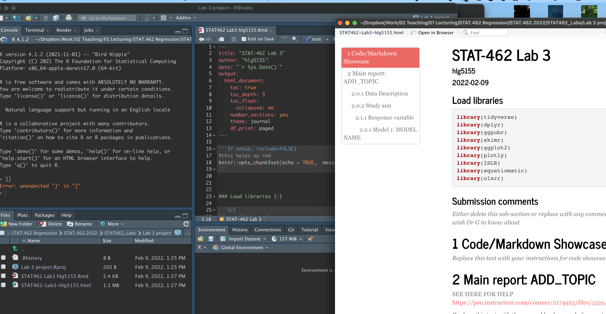

Lab 3: Scatterplots
STAT-462 - Regression Analysis
Dr Helen Greatrex
Learning objectives
By the end of this week’s lab, you will be able to:
- Understand YAML code and set up a lab template
- Get comfortable de-bugging errors
- Conduct some exploratory data analysis
- Make better plots and a more professional report
Assignment 2 is due by midnight Next Wed. [See here]https://psu.instructure.com/courses/2174925/assignments/13762818) I PROVIDE HELP UNTIL THE END OF NEXT WEEK’S LAB (final evening is for your own finishing up).
I need help
There is a TEAMS discussion for lab help CLICK HERE. Remember to include a screenshot of the issue and a short description of the problem. Also try googling the error first.
Every time you re-open R studio check you are using your project file (does it say Lab 3 at the top?).
EVERY TIME YOU RE-OPEN R-STUDIO YOU NEED TO RE-RUN ALL YOUR CODE CHUNKS. The easiest way to do this is to press the “Run All” button (see the Run menu at the top of your script)
If the labs are causing major problems or your computer hardware is struggling (or you have any other software issue), Talk to Dr Greatrex. We can fix this and there are other free/cheap options for using R online.
STEP 1: Lab set up
1a. Get set up
IF YOU ARE DOING THIS ON YOUR COMPUTER: First, go and look at your STAT-462 folder on your computer. Make sure that everything looks right (e.g. a single sub-folder for each lab containing your project file, your Rmd and your html, along with any datafiles/pics as needed). If so, congrats! If not, chat to Dr G.
- Open R-studio. Go to New Project / New Directory / New Project. Then name your project Lab3-Project. Place the location inside your STAT-462 folder. If you are stuck, see Tutorial 2.1.
- Set up your template:
- IF YOU ARE WORKING ON YOUR OWN COMPUTER: Go onto your computer, find your STAT462 folder and make a copy of your lab template .Rmd file. Copy it into your lab 3 folder and rename as Lab 3 & your PSU-e-mail e.g. Lab 3-hlg5155. (you can do this within the R files tab if you wish but probably easier on your computer)
>br> - IF YOU ARE WORKING ON R-STUDIO CLOUD: In the files tab, there is an upload button. Click that and upload last week’s template that you saved onto your computer. Click the checkbox by it and rename to Lab 3-hlg5155 (with your ID). (If you didn’t download a copy of your lab template file, go into your lab 2 project and do so first).
- IF YOU ARE WORKING ON YOUR OWN COMPUTER: Go onto your computer, find your STAT462 folder and make a copy of your lab template .Rmd file. Copy it into your lab 3 folder and rename as Lab 3 & your PSU-e-mail e.g. Lab 3-hlg5155. (you can do this within the R files tab if you wish but probably easier on your computer)
- Go back to R studio, make sure you are running the Lab 3 project, then go to the files quadrant and click on your lab3 script to open. Update the title etc and make any formatting tweaks you like.
1c. Load libraries and check it all knits
In the library section of your lab report, add a new code chunk and use this code to load the following libraries. If some don’t exist on your computer or on the cloud, use [Tutorial 2.3] (https://psu-spatial.github.io/stat462-2022/T1_R_Basics.html#23_Adding_a_new_package) to install/download them first. To make sure they loaded OK, run the code chunk TWICE. The second time any welcome text will disappear unless there are errors.
library(tidyverse)
library(dplyr)
library(ggpubr)
library(skimr)
library(ggplot2)
library(plotly)
library(ISLR)
library(equatiomatic)
library(olsrr)
library(Stat2Data)
library(readxl)
library(tmap)Finally, press knit to check the html works and it looks like this (with your theme)

STEP 2: Code showcase
Note, you might want to make a second .Rmd file to practice the tutorials, so you can save your practice but only write up what is needed in your report
2a. Markdown - inline code and equations
The best thing about R-Markdown is that you can set up reports to automatically update even in the text. For example imagine underneath a code chunk you want to write that the mean of the data is 23. Instead of typing the number 23, we can add inline code to automatically create it
Step A: Work through Tutorial 4.8, Inline code
Use the tutorial to do the following.
Question 1: In the markdown/code showcase section of your lab report, create a hidden code chunk where you find the answer to pi to the power 4, to 4 decimal places. Write a sentence inside your report containing inline code that shares the answer.
Question 2: Conduct a t-test to find out whether the true mean of this data is significantly less than 13. Hide the test itself and simply write out the concluding summary,using inline code and hidden code chunks.
testdata <- c(4,6,2,7,8,34,4,65,6,2,3,1,45,5)Step B: Equations
It’s often good to put professional looking equations into your report. We can do this using the $ symbol and with some internet support.
Rather than read my tutorial, see this one: https://rmd4sci.njtierney.com/math
I tend to use one of the online LateX maths editors to find the exact commands to make equations and then copy/paste the commands into my markdown For example:
Question 3: Explain what the central limit theorem is and why we might use a T distribution instead of a Normal one. Use the tutorials above to make sure your equations are formatted correctly.
STEP 3: Data Analysis
NEW TUTORIALS HAVE APPEARED: SCATTERPLOTS: Tutorial 7.8, CORRELATION PLOTS/CALCULATIONS Tutorial 6.3, REGRESSION Tutorial 9
First - ARE YOU USING THE TEMPLATE FROM LAB 2??? IF NOT, YOU WILL LOSE MANY MARKS. GO BACK AND DO STEP 1 OF THIS LAB (and step 1 of lab 2 if you missed it..)
OK What are we doing here? The aim of EVERY LAB, is to get comfortable writing up analyses of a complex dataset for a specific person or user. The modelling might be the same and we follow the same steps, but the context and topic will mean you will need to think hard about what is important in each case.
The overall structure of the data anlysis for every lab will be the same, but each week we will add on a little more. Specifically
- Exploring the data IN THE CONTEXT OF THE STUDY (ALL the points/questions in the first part of the teaching notes : https://psu.instructure.com/courses/2174925/files/132549205). The aim of this is to fully parameterise the study, talking about your response, predictors, sample vs census, object of analysis etc..
- Exploratory data analysis of your RESPONSE VARIABLE, because understanding/predicting the response is literally the only aim of a regression analysis.
- A series of models. A model could be very simple (nothing ’ explains’)
Our study
Next month, your friend is moving to Sindian Dist., in New Taipei City, Taiwan. They want to buy a house and have asked you to figure out what most impacts house price. (this course is normally less house price/penguin heavy! Next week….)
- Download the “Lab03_house.xlsx” dataset from the Lab page on canvas and put it into your Lab 3 folder. Use the read_excel() command to read it in and save it to a variable called house:
# This only works if you are running your project
# If it can't find the file, use file.choose() to locate it, as described in homework 3
# Then add in the full location rather than just the file name.
house <- read_excel("Lab03_house.xlsx")Explore the dataset (using summaries etc (lab 1 & 2), and by reading more about the data here: https://archive.ics.uci.edu/ml/datasets/Real+estate+valuation+data+set). THE AIM OF THIS STUDY IS TO HELP YOUR FRIEND.
So, describe the dataset to your friend. Use all the hints/questions in the teaching notes: https://psu.instructure.com/courses/2174925/files/132549205 For example talking about your response, predictors, sample vs census, object of analysis etc…
Make sure to summarise if there any limitations using this specific sample in order to address the aim of the study.Finish your the initial description by using a paragraph/sentence similar to the one about penguins in the teaching notes just before EDA.
Adjust/fill in the template to end of Exploratory Data Analysis (EDA), focusing only on your response variable for now (because the aim of the study is to understand the response variable..). Here are the teaching notes
Our first model will be univariate - we think nothing impacts house prices, so all we have is the histogram. Assume that a Normal distribution can fit the data, with mean(sample_mean) and sd(sample_sd). Adjust the title of your model section to read
Model 1: Univariate model: Normal Distribution
In model fitting, write a sentence to explain the above, but instead of writing out “mean(sample_mean) and sd(sample_sd)”, use your new equation knowledge and inline text to write out the model more formally. We will talk about this in class. e.g. We will assume a Normal distribution with $~N(_y , _y) $ where \(\mu_y = ..\) etc.
Under check validity, use a Shapiro-Wilk test, a QQplot and a histogram to assess if you think the house price data really is normally distributed. Note, if you created them above, you can refer back to them in the text. Make sure to fully explain any contradictory results to your friend. Finish by summarising whether you believe that your model is valid given the data and whether it is suitable to use this for either confidence intervals or prediction intervals.
Ignore test skill for now (we will need it later in the course)
Your friend is impatient and wants you to use the model straight away
Under “Assess errors on population parameters:”, calculate using R the 99th confidence interval on the population mean and write up the results in your text in full sentences. E.g. according to the central limit theorem, we can assume.. therefore.. etc.
In the same section, my friend has been told that the average price is 350,000 New Taiwan Dollar/Ping (note the data is in units x 10000). Given your sample, conduct a hypothesis test to assess how likely it is to see your sample result if that statement is likely to be true, with a critical significance of 80% *.
Note, here I say “80%” as in the real world, people often mix and match the way they talk about a critical threshold as either the critical p, or the critical 1-p. This is common outside stats textbooks! So this is adding to the ‘real life messiness’ learning objective..”
It can be frustrating because it’s not immediately obvious what to choose as your critical threshold.. But remember that hypothesis tests normally look for an unusual outcome so I normally assume if it’s over 50% then they mean 1-p.. Best practice would be to choose either one, but then write a short sentence or two in the report to your friend explaining what the p value means and asking, “did you really mean 80%? because that would mean….
- In the predict new value, find the 99% prediction interval for a brand new house. Given this is it very unusual to see a new house priced at over 700,000 New Taiwan Dollar/Ping? (note the data is in units x 10000). (Help including R output in the Lecture 9 notes)
3B. Bivariate model
Make a new level 1 section called Bivariate model.
We do know ways to improve our model, as we know things that might impact house prices contained in our data. Specifically, our friend has been told that houses might be more expensive in the North.
- Scatterplot
See: SCATTERPLOTS: Tutorial 7.8 and REGRESSION Tutorial 9
- Look at the dataset and see which column gives you information about North/South (hint Latitude/longitude, https://www.geographyrealm.com/latitude-longitude/)
- Create a scatterplot to assess this, REMEMBER WHICH IS YOUR RESPONSE!
- Describe the scatterplot fully as discussed in Homework 5 (or see here: KHAN SUMMARY: )
- Create a Simple Linear Regression model to assess the issue (Regression tutorial)
- Extract the equation using equatiomatrix (see the tutorial) and write it below the plot, explaining what the intercept and slope are.
- Plot the abline, line of best fit onto a new scatterplot
- Comment on why this might be misleading as an analysis? To help you answer this question, try running this code to further explore the data on a map.
DONT RUN IF TMAP NOT WORKING
# Command from the sf library
# ADD THE library(sf) and library(tmap) TO YOUR LIBRARY CODE CHUNK
# Make a spatial version of the data using the Longitude and Latitude columns
house.spatial <- st_as_sf(house,coords=c("Longitude","Latitude"),crs = 4326)
# make interactive, for static set as "plot"
tmap_mode("view")
# Command from the tmap library
# and plot
tm_basemap("Esri.WorldTopoMap") +
qtm(house.spatial, # data
symbols.col="House.Price", # which column for the symbols
symbols.alpha=0.9, # transparency
symbols.size=.2, # how big
symbols.palette="Spectral", #colors from https://colorbrewer2.org
symbols.style="fisher") # color breaks- Beyond this, what other confounding variables might there be? Is there a variable that is more important than latitude in predicting house prices in your dataset? Provide evidence to justify your answer. To help you answer this data and answer this question, some useful code includes:
- [A] corrplot(). A quick look at the correlation coefficient between all the variables. We will discuss it more next week. CORRELATION PLOTS/CALCULATIONS Tutorial 6.3,
library(corrplot)
# ADD THAT LIBRARY TO YOUR LIST!
corrplot(cor(house),method="number",type="lower")- [B] If you then want to look at three variables together, you can use an interactive plot e.g you can use this code and change the response, y (currently house price), the predictor x (currently latitude) and the colour (currently house.age).
# Create a plot
p <- house %>%
ggplot( aes(Latitude,House.Price, col= House.Age)) +
geom_point() +
theme_classic()+
scale_color_gradient(low="blue", high="red")
# and actually plot it
ggplotly(p)
STEP 4: Show me something new
Remember that an A is 94%, so you can ignore this section and still easily get an A. But here is your time to shine. Also, if you are struggling in another part of the lab, you can use this to gain back points.
To get the final 4 marks in the lab, you need to show me something new, e.g. you need to go above and beyond the lab questions in some way.
- You get 2/4 for doing something new in any way BEYOND THE LAB INSTRUCTIONS/CODE
- You get 4/4 for something really impressive or multiple small things.
- You must tell us in your R script what you did!
Here are some ideas:
- You found a cool new plot from R graph gallery or flowingdata.com and made it work
- You did something neat in Markdown such as embedding a pdf
- You found a new package/command that did something relevant
- You found something cool on data camp and applied it here
- You tweaked your mapping/plotting code to be better
Submitting your Lab
Remember to save your work throughout and to spell check your writing (next to the save button).
Now, press the knit button for the final time.
If you have not made any mistakes in the code then R should create a html file in your lab 2 folder which includes your answers. If you look at your lab 1 folder, you should see this there - complete with a very recent time-stamp.
In that folder, double click on the html file. This will open it in your browser. CHECK THAT THIS IS WHAT YOU WANT TO SUBMIT.
If you are on R studio cloud, see Tutorial 1 for how to download your files
Now go to Canvas and submit BOTH your html and your .Rmd file in Lab 2.

Grading Rubric/checklist
See the table below for what this means - 100% is hard to get!
HTML FILE SUBMISSION - 8 marks
RMD CODE SUBMISSION - 8 marks
WRITING/CODE STYLE - 10 MARKS
Your code and document is neat and easy to read. LOOK AT YOUR HTML FILE IN YOUR WEB-BROWSER BEFORE YOU SUBMIT. There is also a spell check next to the save button.
You have written your answers below the relevant code chunk in full sentences in a way that is easy to find and grade. For example, you have written in full sentences, it is clear what your answers are referring to. You have used units and explained your workings.
MARKDOWN SHOWCASE: 10 MARKS
You use full sentences and units, You have great Markdown formatting
R-CODE SHOWCASE: 20 MARKS
UNIVARIATE: 20 MARKS
BIVARIATE: 20 MARKS
You have managed to successfully complete all the code challenges
Above and beyond: 4 MARKS
See above for ideas on grading
[100 marks total]
Overall, here is what your lab should correspond to:
| Grade | % Mark | Rubric |
|---|---|---|
| A* | 98-100 | Exceptional. Not only was it near perfect, but the graders learned something. THIS IS HARD TO GET. |
| NA | 96+ | You went above and beyond |
| A | 94+: | Everything asked for with high quality. Class example |
| A- | 90+ | The odd minor mistake, All code done but not written up in full sentences etc. A little less care |
| B+ | 87+ | More minor mistakes. Things like missing units, getting the odd question wrong, no workings shown |
| B | 84+ | Solid work but the odd larger mistake or missing answer. Completely misinterpreted something, that type of thing |
| B- | 80+ | Starting to miss entire/questions sections, or multiple larger mistakes. Still a solid attempt. |
| C+ | 77+ | You made a good effort and did some things well, but there were a lot of problems. (e.g. you wrote up the text well, but messed up the code) |
| C | 70+ | It’s clear you tried and learned something. Just attending labs will get you this much as we can help you get to this stage |
| D | 60+ | You attempt the lab and submit something. Not clear you put in much effort or you had real issues |
| F | 0+ | Didn’t submit, or incredibly limited attempt. |